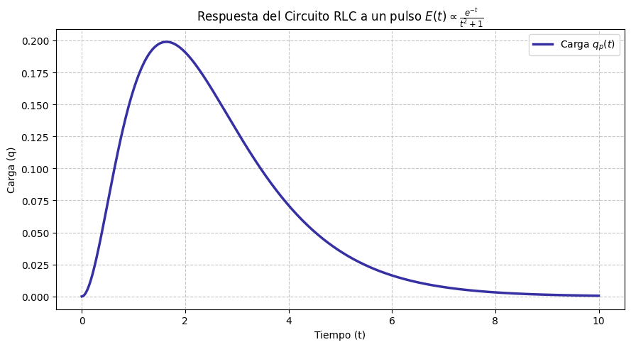

El método de coeficientes indeterminados resulta ser una herramienta práctica y ágil, pero presenta una limitación fundamental: requiere estrictamente que la función no homogénea \(R(x)\) pertenezca a la familia de polinomios, exponenciales o funciones seno y coseno. Frente a términos más complejos como \(\sec(x)\), \(\tan(x)\) o \(\frac{1}{x}\), dicha técnica queda inoperante.
Para abordar estas situaciones sin restricción de forma funcional, recurrimos al método de Variación de Parámetros introducido por Joseph-Louis Lagrange. Este enfoque posee un carácter universal: permite resolver cualquier ecuación diferencial lineal no homogénea siempre que sea posible resolver la ecuación homogénea asociada y calcular las integrales resultantes.
Deducimos ahora algunas expresiones importantes sobre este métodos. Consideremos la ecuación diferencial general: $$y'' + P(x)y' + Q(x)y = R(x)$$ Suponemos que la ecuación homogénea: $$y'' + P(x)y' + Q(x)y = 0$$ tiene solución general como una combinación lineal de dos soluciones linealmente independientes \(y_1(x)\) y \(y_2(x)\): $$y_h(x) = C_1 y_1(x) + C_2 y_2(x) $$ Sustituimos las constantes \(C_1\) y \(C_2\) por funciones incógnitas \(u_1(x)\) y \(u_2(x)\), así obtenemos $$y_p(x) = u_1(x)y_1(x) + u_2(x)y_2(x)$$ Derivamos la solución propuesta: $$ y_p' = (u_1' y_1 + u_2' y_2) + (u_1 y_1' + u_2 y_2')$$ Imponemos la condición auxiliar para simplificar el cálculo: $$ u_1' y_1 + u_2' y_2 = 0$$ Entonces, la primera derivada se reduce a: $$y_p' = u_1 y_1' + u_2 y_2'$$ Derivando otra vez resulta $$y_p'' = (u_1' y_1' + u_2' y_2') + (u_1 y_1'' + u_2 y_2'')$$ Sustituimos \(y_p\), \(y_p'\) y \(y_p''\) en la ecuación diferencial inicial y agrupamos términos respecto a \(u_1\) y \(u_2\): $$u_1(y_1'' + P y_1' + Q y_1) + u_2(y_2'' + P y_2' + Q y_2) + u_1' y_1' + u_2' y_2' = R(x)$$ Como \(y_1\) y \(y_2\) son soluciones de la homogénea, los términos entre paréntesis se anulan, obtenemos entonces: $$u_1' y_1' + u_2' y_2' = R(x)$$ Formamos un sistema de ecuaciones lineales siguiente, que nos permitirá conocer \(u_1'\) y \(u_2'\) $$ \begin{eqnarray} u_1' y_1 + u_2' y_2 &=&0; \\ u_1' y_1' + u_2' y_2' &=& R(x) \end{eqnarray}$$ Al aplicar la regla de Cramer se tiene $$ u_1'= \frac{ \begin{vmatrix} 0 & y_2 \\ R(x) & y_2' \end{vmatrix} }{ \begin{vmatrix} y_1 & y_2 \\ y_1' & y_2' \end{vmatrix} } =\frac{-y_2R(x)}{W} ; $$ $$ u_2'= \frac{ \begin{vmatrix} y_1 & 0 \\ y_1' & R(x) \end{vmatrix} }{ \begin{vmatrix} y_1 & y_2 \\ y_1' & y_2' \end{vmatrix} } =\frac{y_1R(x)}{W} $$ donde hemos usado el wronskiano \(W\) definido por $$ W = \begin{vmatrix} y_1 & y_2 \\ y_1' & y_2' \end{vmatrix} = y_1 y_2' - y_2 y_1' $$ Integramos para obtener \(u_1\) y \(u_2\): $$ u_1(x) = \int \frac{-y_2 R(x)}{W} dx, \quad u_2(x) = \int \frac{y_1 R(x)}{W} dx $$ La solución particular queda definida como: $$y_p(x) = y_1(x) \int \frac{-y_2 R(x)}{W} dx + y_2(x) \int \frac{y_1 R(x)}{W} dx$$ Como consecuencia, tenemos el siguiente algoritmo de solución.
Iniciamos el desarrollo resolviendo la ecuación homogénea asociada \(y'' + y = 0\). Su ecuación característica es \(r^2 + 1 = 0\), cuyas raíces complejas son \(r = \pm i\). De este modo, obtenemos las funciones del conjunto fundamental \(y_1 = \cos(x)\) y \(y_2 = \sin(x)\). Por lo cual, la solución complementaria está dada por: $$ y_c = C_1 \cos(x) + C_2 \sin(x) $$ A continuación, calculamos el Wronskiano asociado a estas funciones principales: $$ W = \begin{vmatrix} \cos(x) & \sin(x) \\ -\sin(x) & \cos(x) \end{vmatrix} = \cos^2(x) + \sin^2(x) = 1 $$ Dado que el coeficiente de \(y''\) es uno, identificamos directamente la función \(R(x) = \sec(x)\). $$ u_1= -\int{ \frac{y_2 R(x)}{W} }dx=- \int{ \frac{\sin(x)\sec(x)}{1} } dx=- \int{ \tan(x) } = \ln|\cos(x)| $$ $$ u_2= \int{\frac{y_1 R(x)}{W} } dx= \int{ \frac{\cos(x)\sec(x)}{1} } dx= \int{dx } =x $$ Sustituyendo estos resultados construimos la solución particular $$y_p = \cos(x)\ln|\cos(x)| + x\sin(x).$$ Al unirla con la solución homogénea, encontramos la solución general:
$$ y(x) = C_1 \cos(x) + C_2 \sin(x) + \cos(x)\ln|\cos(x)| + x\sin(x) $$La parte homogénea coincide con el problema anterior, por lo que disponemos del mismo conjunto fundamental compuesto por \(y_1 = \cos(x)\) y \(y_2 = \sin(x)\), y el Wronskiano \(W = 1\).
Calculamos ahora las derivadas de las funciones incógnita considerando la función\(R(x) = \tan(x)\):
$$ u_1' = -\sin(x)\tan(x) = -\frac{\sin^2(x)}{\cos(x)} = -\frac{1 - \cos^2(x)}{\cos(x)} = \cos(x) - \sec(x) $$ $$ u_2' = \cos(x)\tan(x) = \sin(x) $$Al integrar ambas expresiones obtenemos los parámetros correspondientes:
$$ u_1 = \int (\cos(x) - \sec(x)) \, dx = \sin(x) - \ln|\sec(x) + \tan(x)| $$ $$ u_2 = \int \sin(x) \, dx = -\cos(x) $$Al estructurar la solución particular y multiplicar por sus respectivas soluciones base tenemos $$ y_p = \left(\sin(x) - \ln|\sec(x) + \tan(x)|\right)\cos(x) - \cos(x)\sin(x), $$ simplificando $$ y_p = -\cos(x)\ln|\sec(x) + \tan(x)| $$
Por lo tanto, agrupando términos semejantes con la parte homogénea, la solución general queda expresada como:
$$ y(x) = C_1 \cos(x) + C_2 \sin(x) - \cos(x)\ln|\sec(x) + \tan(x)| $$Comenzamos por resolver la ecuación homogénea asociada. En este caso, el polinomio característico es $$r^2 - 2r + 1 = (r-1)^2=0 \implies y_1 = e^x \quad \hbox{y} \quad y_2 = x e^x. $$ Evaluamos el wronskiano de estas soluciones: $$ W =\begin{vmatrix} e^x & xe^{x} \\ e^x & e^{x}+xe^x \end{vmatrix} = e^x(e^x + x e^x) - (x e^x)(e^x) = e^{2x} + x e^{2x} - x e^{2x} = e^{2x} $$
Calculamos ahora \(u_1\) , \(u_2\) sustituyendo la función \(R(x) = \frac{e^x}{x}\) en sus expresiones
$$ u_1= -\int{ \frac{y_2 R(x)}{W} }dx = - \int{ \frac{(x e^x)(e^x / x)}{e^{2x}} }dx = -\int{ \frac{e^{2x}}{e^{2x}}}dx = -\int dx=-x $$ $$ u_2= \int{\frac{y_1 R(x)}{W} } dx =\int{ \frac{(e^x)(e^x / x)}{e^{2x} }}dx = \int{ \frac{e^{2x} / x}{e^{2x} } }dx=\int{ \frac{dx}{x}}=\ln(x)$$ Con ello, construimos la solución particular: $$ y_p = -x e^x + x e^x \ln(x) $$Es importante observar que el término \(-x e^x\) presenta la misma forma funcional que la solución homogénea \(C_2 x e^x\), por lo que puede absorber dentro de dicha constante arbitraria. Así, la solución general se simplifica de forma elegante a:
$$ y(x) = C_1 e^x + C_2 x e^x + x e^x \ln(x) $$Iniciamos resolviendo la ecuación homogénea. La ecuación característica es: $$ r^2-3r+2=(r-2)(r-1)$$ Sus raíces características son \(r_1 = 1\); \(r_2 = 2\). Por lo cual, tenemos las soluciones $$y_1 = e^x \quad \hbox{ y } \quad y_2 = e^{2x}.$$ A partir de estas expresiones, el Wronskiano es: $$ W = \begin{vmatrix} e^x & e^{2x} \\ e^x & 2e^{2x} \end{vmatrix} = (e^x)(2e^{2x}) - (e^{2x})(e^x) = e^{3x} $$ Tenemos que: $$ u_1 = -\int{ \frac{y_2 R(x)}{W} }dx = -\int{ \frac{e^{2x} }{e^{3x}(1+e^{-x}) }}dx = -\int{\frac{e^{-x}}{1+e^{-x}}}dx $$ $$ u_2= \int{\frac{y_1 R(x)}{W} } dx=\int{\frac{e^x}{e^{3x}(1+e^{-x}) }} dx= \int{\frac{e^{-2x}}{1+e^{-x}} }dx$$ Hacemos ahora el cambio de variable $$u = e^{-x}; \quad du=-e^{-x} dx;$$ de donde $$ \frac{e^{-x}dx}{1+e^{-x}} = \frac{du}{1+u };$$ y $$ \frac{e^{-2x}dx}{1+e^{-x}}=\frac{e^{-x}e^{-x}dx}{1+e^{-x}}= -\frac{udu}{1+u}=\left(-1+\frac{ 1}{1+u} \right) du $$ integrando tenemos; $$ u_1 = \int{ \frac{du}{1+u }} =\ln(1+u)=\ln(1+e^{-x}) $$ $$ u_2 =\int{ \left( -1 + \frac{1}{1+u} \right) } du=-u+\ln(1+u)=-e^{-x}+\ln(1+e^{-x}) $$ Al multiplicar por $y_1$ e $y_2$ , se concluye que la solución general está dada por:
$$ y(x) = C_1 e^x + C_2 e^{2x} + (e^x + e^{2x})\ln(1+e^{-x}) $$Analizamos primero el comportamiento transitorio resolviendo la parte homogénea. La raíz doble \(r = -1\) nos entrega el conjunto de soluciones \(q_1(t) = e^{-t}\) y \(q_2(t) = t e^{-t}\), cuyo determinante Wronskiano resulta ser \(W = e^{-2t}\).
Calculamos ahora las derivadas de los parámetros asociadas a la perturbación externa:
$$ u_1' = -\frac{t e^{-t}}{e^{-2t}} \cdot \frac{e^{-t}}{t^2+1} = -\frac{t}{t^2+1} $$ $$ u_2' = \frac{e^{-t}}{e^{-2t}} \cdot \frac{e^{-t}}{t^2+1} = \frac{1}{t^2+1} $$Al realizar la integración de ambas expresiones obtenemos $$ u_1 = -int{\frac{t}{t^2+1} }dt= -\frac{1}{2}\ln(t^2+1) $$ y $$ \(u_2 = = \int{\frac{1}{t^2+1}{dt= \arctan(t). $$ Ensamblando estos términos con la parte transitoria, determinamos la respuesta completa en la carga del sistema:
$$ q(t) = C_1 e^{-t} + C_2 t e^{-t} - \frac{1}{2}e^{-t}\ln(t^2+1) + t e^{-t}\arctan(t) $$La gráfica siguiente ilustra cómo la carga incrementa progresivamente al absorber la energía recibida del pulso externo y, posteriormente, decae hacia cero de forma exponencial a medida que el sistema disipa dicha energía.

El cálculo correcto del Wronskiano representa la piedra angular para evitar errores en este método. Se sugiere utilizar el siguiente prompt de entrenamiento en una herramienta de IA:
Actúa como un profesor universitario de Ecuaciones Diferenciales.
Dame 3 pares de funciones (y1, y2) que sean solución de alguna
ecuación diferencial homogénea de segundo orden.
Pídeme que calcule el Wronskiano de la primera. Una vez que te dé
el resultado, corrígeme si me equivoco, y luego dame la segunda.
Mantén las funciones a nivel universitario intermedio.
Selecciona la respuesta que consideres correcta para cada una de las siguientes preguntas teóricas y prácticas.